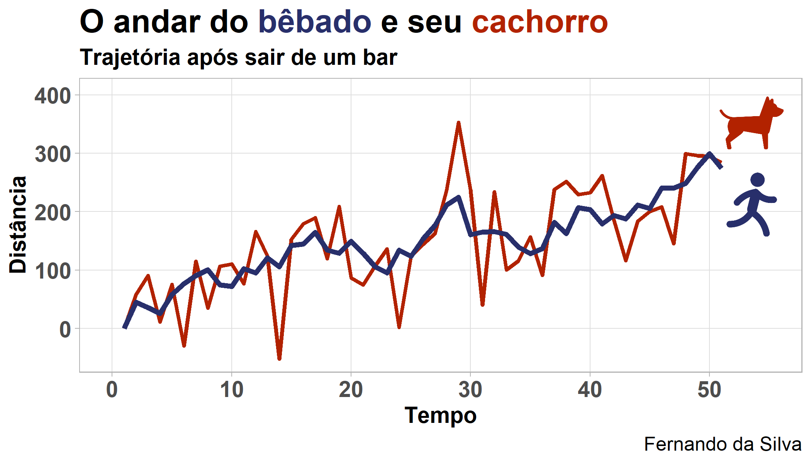
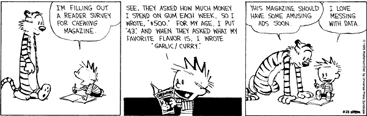
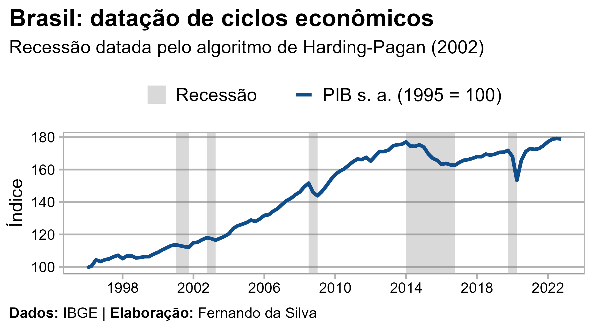
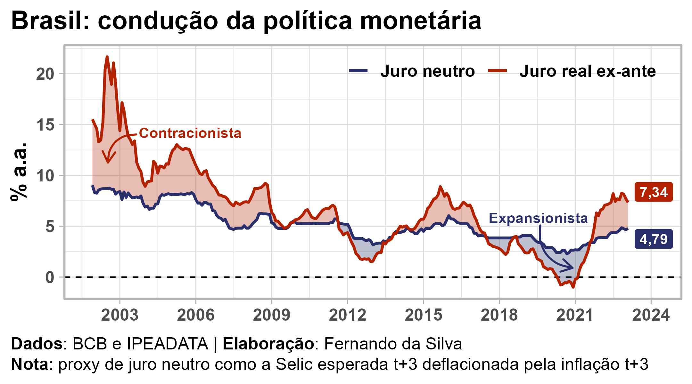

Fernando da Silva
About
CV
Portfolio
Blog
Topics
All
(5)
API
(1)
Cointegration
(1)
Data
(2)
Economic Cycle
(1)
English
(1)
Macroeconomics
(4)
Monetary Policy
(1)
Português
(4)
R
(4)
Time Series
(1)
Blog
Order By
Default
Title
Date - Oldest
Date - Newest
Author

O andar do bêbado e seu cachorro: entendendo cointegração no R
10 min
Time Series
Cointegration
R
Português
Uma analogia sobre cointegração de Engle-Granger e uma aplicação em R
Fernando da Silva
Apr 30, 2022

5 armadilhas dos dados (macro)econômicos no Brasil
5 min
Macroeconomics
Data
Português
As nuances que só descobrimos sujando as mãos nos dados brutos
Fernando da Silva
Nov 27, 2021

Datação de ciclos econômicos e o algoritmo de Harding-Pagan
13 min
Macroeconomics
R
Economic Cycle
Português
Uma visão geral sobre ciclos econômicos, o algoritmo e uma aplicação em R
Fernando da Silva
Jul 20, 2021
meedr: MacroEconomic Expectations Data in R
5 min
R
Macroeconomics
Data
API
English
Quick and easy access to market expectations data of the Focus report from Central Bank of Brazil
Fernando da Silva
Mar 13, 2021

Cálculo da taxa de juros real: ex post e ex ante
7 min
Macroeconomics
Monetary Policy
R
Português
O porquê e o como de analisar o preço do dinheiro ao longo do tempo, com uma aplicação em R
Fernando da Silva
Feb 24, 2021
No matching items